Mere end bare et teater
Vores koncept
Blaagaard Teater er et teater, som skiller sig ud. Blaagaard Teater ønsker at nå ud til det unge
publikum på Nørrebro, og samtidig skabe et fællesskab omkring teatret.
Konceptet som vi har udviklet til Blaagaard Teater tager netop udgangspunkt i det fællesskab både
Blaagaard, og de unge søger efter.
Fællesskab og diversitet er nøgleord, som beskriver
Blaagaards værdier og ønsker for deres udvikling som teater i byen.
Fællesskabet skal være tilgængeligt på den fysiske lokation på Nørrebro, men skal også være online
på sociale medier. På de sociale medier vil der stadig blive delt opslag omhandlende kommende
forestillinger, men der vil også blive lagt vægt på at bygge et fællesskab op sammen med publikum.
Vi vil vise at Blaagaard er mere end blot et teater, og vi vil nå ud til publikum, der hvor
de er!
Social Media
Hvilket stykke passer til dig?
Hvilket emne interesserer du dig mest for?
Bliv en del af noget stort
Vores events
Her hos Blaagaard Teater afholder vi forskellige events, og vi håber meget på, at du har lyst til at deltage. Vores eventkalender kan ses nedenfor, hvor du også kan tilmelde dig.